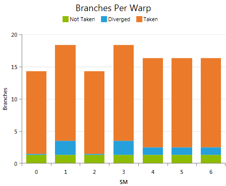
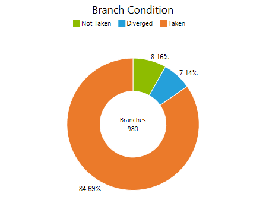

控制流可能对 kernel 的执行效率产生严重影响，尤其是当大量控制流判定都是分歧的，迫使一个 warp 中的线程在 kernel 代码中走上完全不同的控制路径时。分支统计实验有助于回答以下问题：控制流指令被执行了多少次、其中有多少是一致的、有多少是分歧的，以及控制流对整体 kernel 执行性能的影响有多大。
如果一条控制流指令迫使 warp 中的线程走上不同的执行路径，则该指令被视为分歧的。一旦发生这种情况，由于一个 warp 中的所有线程共享一个程序计数器，不同的执行路径必须被串行化执行；这会增加该 warp 所执行的指令总数。当所有不同的执行路径都完成后，线程才会重新汇合到同一条执行路径。如果条件表达式对一个 warp 中的所有线程评估出一致的判定结果，则只执行被选中的那一条代码路径——因此开销小得多。所执行的一致控制流判定数与全部条件判定执行数之比定义为分支效率（Branch Efficiency）。
分歧控制流造成的实际性能影响，与需要评估多少条不同代码路径以及被串行化的代码段有多昂贵的组合成正比。一种刻画方法是：跟踪所有已执行指令中，warp 内实际参与执行（即未被谓词执行屏蔽掉）的线程数。这通常被称为控制流效率（Control Flow Efficiency）。按定义，它与做出多少次控制流判定无关，而是给出了由于控制流而导致的可用计算资源利用率的上限。
每 warp 分支数 按条件语句的判定结果分组，显示每个 SM 上每个 warp 平均执行的分支指令数。可用于研究 kernel grid 中各 warp 所执行的控制流指令总量。将每 warp 执行的分支指令数与 指令统计 实验中 IPW 指标所报告的每 warp 已执行指令总数进行对比，可以了解 kernel 代码中执行分支指令的频率。 所报告的 taken / not taken 分支数指的是在设备上实际执行的条件语句。如果编译器在优化阶段选择了对条件取反，这并不一定与 CUDA C 或 PTX 代码中表达的定义一致。可查看 源码视图 页面以研究高级代码与汇编代码之间的映射关系。 指标Not Taken / Taken 每 warp 平均执行的、控制流判定一致的分支指令数；即一个 warp 中所有活跃线程要么全部走分支，要么全部不走。 Diverged 每 warp 平均执行的、条件在 warp 内各线程间产生不同结果的分支指令数。所有至少有一个线程参与的代码路径都会被顺序执行。该数值越低越好；不过，要理解控制流对设备利用率的影响，请同时查看 控制流效率。 |
分支条件 显示在 kernel grid 中所有 warp 上汇总后的已执行分支中一致分支与分歧分支的分布。如果分歧分支的比例较高，请考虑重新组织将负载划分到 block 和 warp 的方式；另一种负载分配方案可能能够减少分歧的控制流，同时也减少对控制流判定的总体需求。更多细节也可参阅 CUDA C Best Practices Guide 中 分支与分歧 一节。 所报告的 taken / not taken 分支数指的是在设备上实际执行的条件语句。如果编译器在优化阶段选择了对条件取反，这并不一定与 CUDA C 或 PTX 代码中表达的定义一致。可查看 源码视图 页面以研究高级代码与汇编代码之间的映射关系。 指标Not Taken / Taken 控制流判定一致的已执行分支指令总数；即一个 warp 中所有活跃线程要么全部走分支，要么全部不走。 Diverged 条件在 warp 内各线程间产生不同结果的已执行分支指令总数。所有至少有一个线程参与的代码路径都会被顺序执行。该数值越低越好；不过，要理解控制流对设备利用率的影响，请同时查看 控制流效率。 |
CUDA C Best Practices Guide 中重点强调了关于 控制流 的若干通用编码准则：
根据本实验的结果，检查以下哪些情况适用：
NVIDIA GameWorks Documentation Rev. 1.0.150630 ©2015. NVIDIA Corporation. All Rights Reserved.